Cette page est générée automatiquement par l'application. Elle rassemble les images PNG enregistrées dans le dossier exports/ par le bouton « Exporter les images » des pages « Loi de Poisson », « Évolutions » et « Dépendance angulaire ». Chaque groupe correspond à un export daté d'une page : les figures sont identiques aux graphiques affichés dans l'application au moment de l'export.
Vérification de la loi de Poisson (prises de 60 secondes à 90°)
Vérification de la loi de Poisson sur les prises de 60 secondes à 90°. Les histogrammes montrent la distribution des taux de comptage (détecteur 1, détecteur 2 et coïncidences). Si les données suivent une loi de Poisson, la distribution observée correspond à une loi de Poisson de paramètre μ (la moyenne) ; le bouton « Activer l'ajustement » de l'application superpose cet ajustement avec sa probabilité χ². Les trois dernières figures montrent l'accumulation de chaque histogramme au fil des prises.
Export du 2026-10-01 18:53:486 images
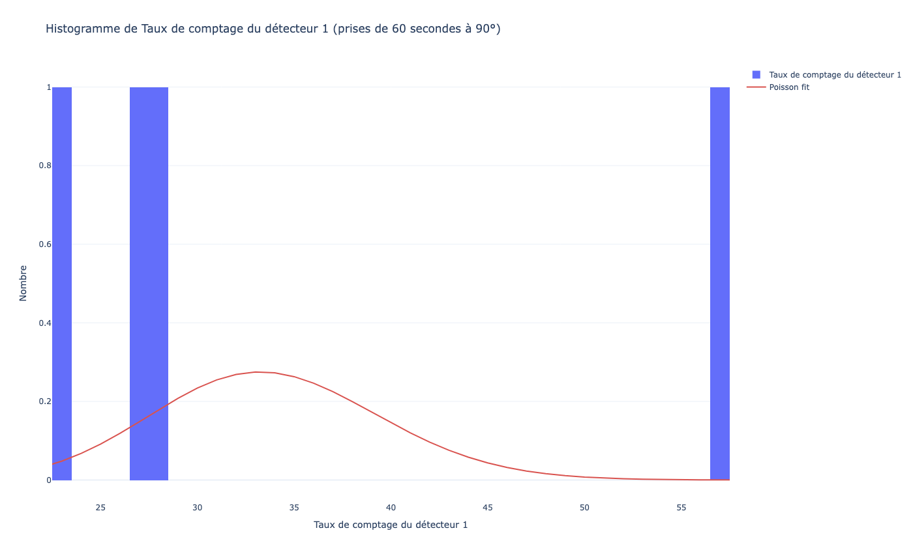
Histogramme de Taux de comptage du détecteur 1 (prises de 60 secondes à 90°)
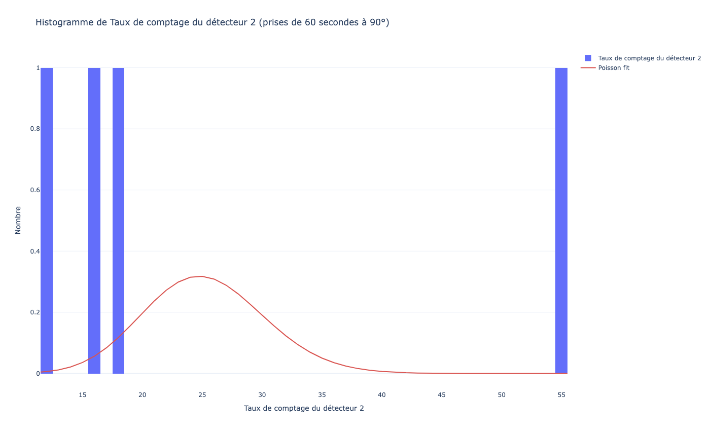
Histogramme de Taux de comptage du détecteur 2 (prises de 60 secondes à 90°)
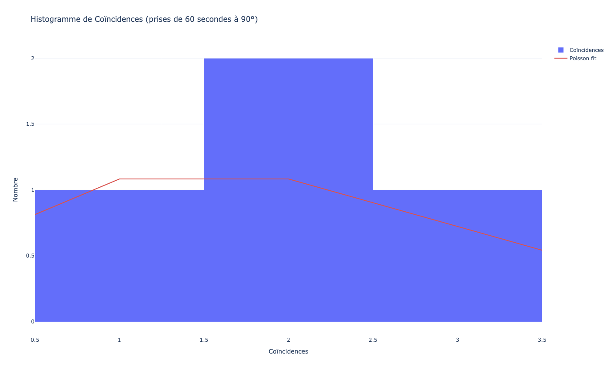
Histogramme de Coïncidences (prises de 60 secondes à 90°)
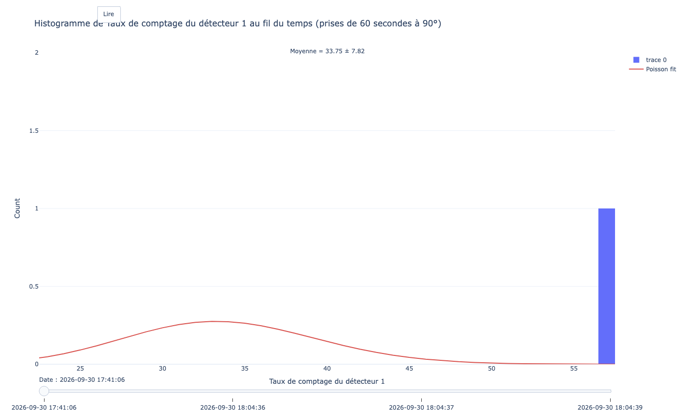
Histogramme de Taux de comptage du détecteur 1 au fil du temps (prises de 60 secondes à 90°)
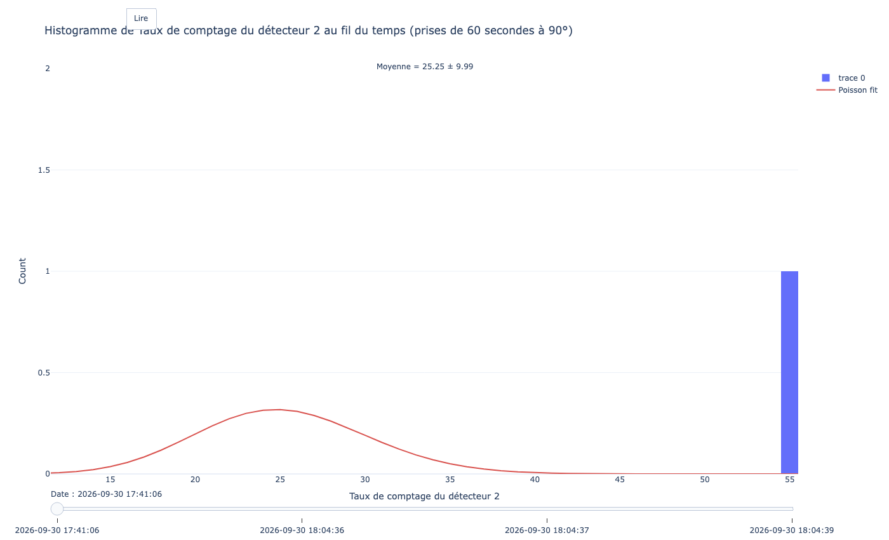
Histogramme de Taux de comptage du détecteur 2 au fil du temps (prises de 60 secondes à 90°)
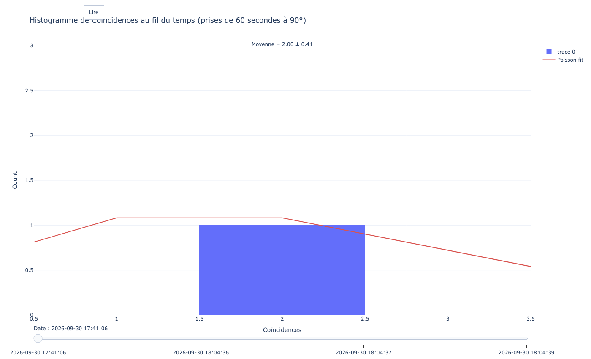
Histogramme de Coïncidences au fil du temps (prises de 60 secondes à 90°)
Graphiques d'évolution en fonction du temps (détecteur en position verticale)
Évolution dans le temps des décomptes par minute, prise après prise (détecteur en position verticale), avec leurs incertitudes d'origine de Poisson. Le second graphique montre la moyenne cumulée de ces taux, qui se stabilise vers la valeur moyenne du flux de rayonnement cosmique.
Export du 2026-10-01 19:06:082 images
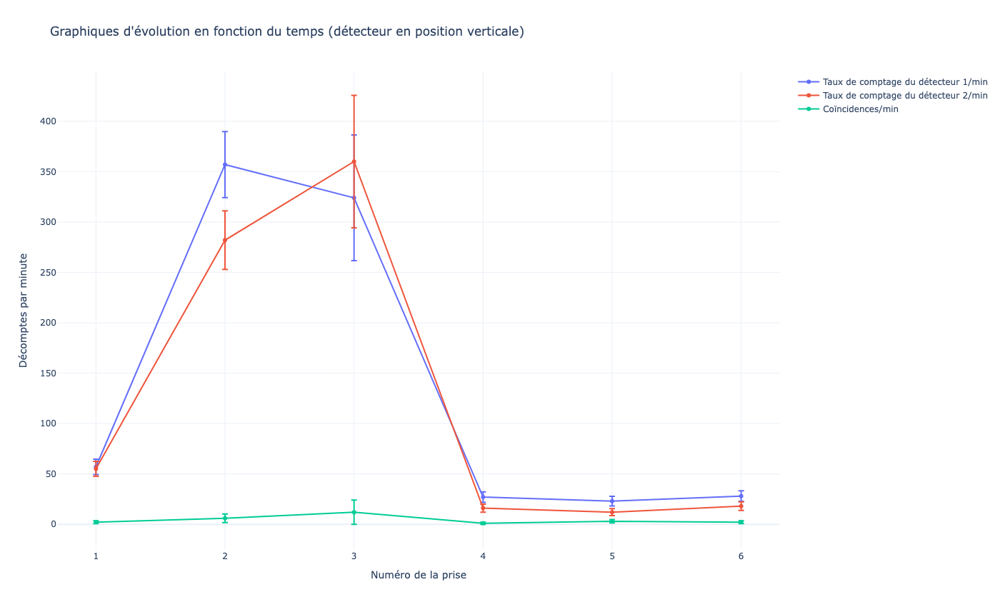
Décomptes par minute de chaque prise (détecteur en position verticale)Moyenne cumulée des décomptes par minute (détecteur en position verticale)
Export du 2026-10-01 19:06:102 images
Décomptes par minute de chaque prise (détecteur en position verticale)
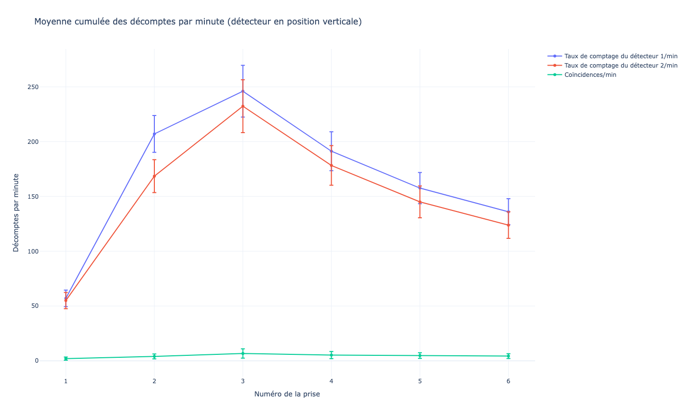
Moyenne cumulée des décomptes par minute (détecteur en position verticale)
Dépendance angulaire
Dépendance angulaire du taux moyen de coïncidences par minute. Les points représentent le taux moyen de coïncidences pour chaque angle, ajusté avec le modèle f(θ) = A·cos(θ−π/2)^n (zone ombrée : incertitude de l'ajustement). Les deux derniers graphiques suivent l'évolution des paramètres ajustés A et n au fur et à mesure que les mesures sont ajoutées.
Export du 2026-10-01 19:07:193 images
Taux moyen de coïncidences par minute en fonction de l'angleÉvolution de A selon les mesures ajoutées
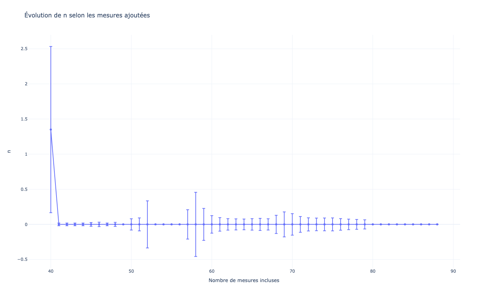
Évolution de n selon les mesures ajoutées
Export du 2026-10-01 19:22:543 images
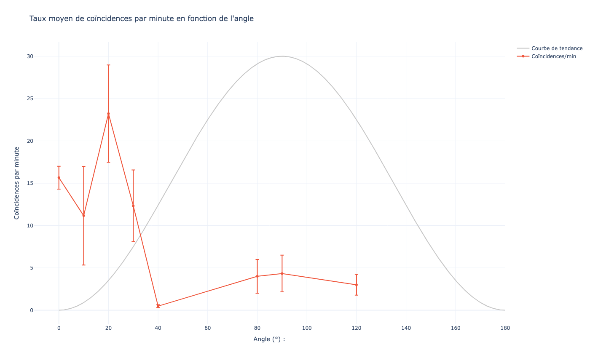
Taux moyen de coïncidences par minute en fonction de l'angleÉvolution de A selon les mesures ajoutéesÉvolution de n selon les mesures ajoutées
Export du 2026-10-01 19:22:553 images
Taux moyen de coïncidences par minute en fonction de l'angleÉvolution de A selon les mesures ajoutéesÉvolution de n selon les mesures ajoutées
Export du 2026-10-01 19:22:563 images
Taux moyen de coïncidences par minute en fonction de l'angleÉvolution de A selon les mesures ajoutéesÉvolution de n selon les mesures ajoutées
Export du 2026-10-01 19:22:583 images
Taux moyen de coïncidences par minute en fonction de l'angle
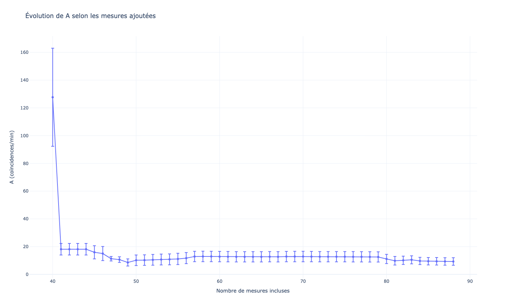
Évolution de A selon les mesures ajoutéesÉvolution de n selon les mesures ajoutées
Export du 2026-10-02 09:33:173 images
Taux moyen de coïncidences par minute en fonction de l'angleÉvolution de A selon les mesures ajoutéesÉvolution de n selon les mesures ajoutées